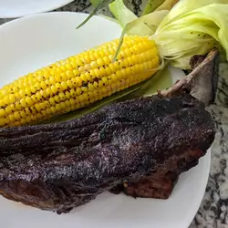

Corn on the Cob

Description
This recipe is so easy to make, and always such a hit! It is great for backyard barbecues. For best results, chill overnight.
Ingredients
Steps
- Pull back the husks, remove the silk, then coat the corn with butter, salt, and pepper. Close the husks and wrap each ear of corn in foil.
- Grill each piece of corn on the cob until tender (turn the corn occasionally to ensure even cooking).